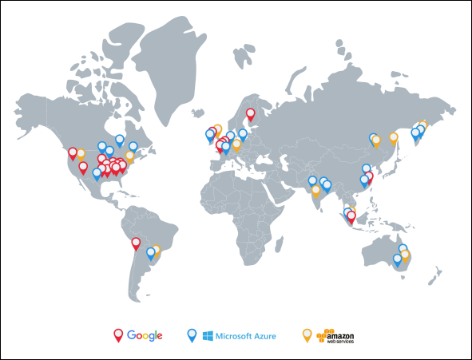

13. Distributed Monitoring
System Design: Distributed Monitoring
System Design: Distributed Monitoring
Learn about the importance of monitoring in a distributed system, and explore our high-level plan for designing it.
We'll cover the following
Monitoring#
The modern economy depends on the continual operation of IT infrastructure. Such infrastructure contains hardware, distributed services, and network resources. These components are interlinked in such infrastructure, making it challenging to keep everything functioning smoothly and without application downtime.
It’s challenging to know what’s happening at the hardware or application level when our infrastructure is distributed across multiple locations and includes many servers. Components can run into failures, response latency overshoot, overloaded or unreachable hardware, and containers running out of resources, among others. Multiple services are running in such an infrastructure, and anything can go awry.
When one of the services goes down, it can be the reason for other services to crash, and as a result, the application is unavailable to users. If we don’t know what went wrong early, it could take us a lot of time and effort to debug the system manually. Moreover, for larger services, we need to ensure that our services are working within our agreed service-level agreements. We need to catch important trends and signals of impending failures as early warnings so that any concerns or issues can be addressed.
Monitoring helps in analyzing such complex infrastructure where something is constantly failing. Monitoring distributed systems entails gathering, interpreting, and displaying data about the interactions between processes that are running at the same time. It assists in debugging, testing, performance evaluation, and having a bird’s-eye view over multiple services.
How will we design a distributed monitoring system?#
We’ve divided the distributed monitoring system design into the following chapters and lessons:
- Distributed Monitoring
- Introduction to Distributed Monitoring: Learn why monitoring in a distributed system is crucial, how costly downtime is, and the types of monitoring.
- Prerequisites for a Monitoring System: Explore a few essential concepts about metrics and alerting in a monitoring system.
- Monitoring Server-side Errors
- Designing a Monitoring System: Define the requirements and high-level design of the monitoring system.
- A Detailed Design of the Monitoring System: Go into the details of designing a monitoring system, and explore the components involved.
- Visualize Data in a Monitoring System: Learn a unique way to visualize an enormous amount of monitoring data.
- Monitor Client-side Errors
- Focus on Client-side Errors: Get introduced to client-side errors and why it’s important to monitor them.
- Design a Client-side Monitoring System: Learn to design a system that monitors the client-side errors.
In the next lesson, we’ll look at why monitoring is essential in a distributed system through an example. We’ll also look at the downtime cost of failures and monitoring types.
Introduction to Distributed Monitoring
Introduction to Distributed Monitoring
Learn why monitoring in a distributed system is crucial.
We'll cover the following
Need for monitoring#
Let’s go over how the failure of a single service can affect the smooth execution of related systems. To avoid cascading failures, monitoring can play a vital role with early warnings or steering us to the root cause of faults.
Let’s consider a scenario where a user uploads a video, intro-to-system-design, to YouTube. The UI service in server A takes the video information and gives the data to service 2 in server B. Service 2 makes an entry in the database and stores the video in blob storage. Another service, 3, in server C manages the replication and synchronization of databases X and Y.
In this scenario, service 3 fails due to some error, and service 2 makes an entry in the database X. The database X crashes, and the request to fetch a video is routed to database Y. The user wants to play the video intro-to-system-design, but it will give an error of “Video not found…”
The example above is relatively simple. In reality, complex problems are encountered since we have many data centers across the globe, and each has millions of servers. Due to a decreasing human administrators to servers ratio, it’s often not feasible to manually find the problems. Having a monitoring system reduces operational costs and encourages an automated way to detect failures.
Downtime cost#
There are fault-tolerant system designs that hide most of the failures from the end users, but it’s crucial to catch the failures before they snowball into a bigger problem. The unplanned outage in services can be costly. For example, in October 2021, Meta’s applications were down for nearly nine hours, resulting in a loss of around $13 million per hour. Such losses emphasize the potential impact of outages.
The IT infrastructure is spread widely around the globe. The illustration below the next paragraph gives an overview of distributed data centers of major cloud providers across the globe, circa 2021. The data centers are connected through private or public networks. Monitoring the servers in geo-separated data centers is essential.
According to Amazon, on December 7, 2021, “At 7:30 AM PST, an automated activity to scale capacity of one of the AWS services hosted in the main AWS network triggered an unexpected behavior from a large number of clients inside the internal network. This resulted in a large surge of connection activity that overwhelmed the networking devices between the internal network and the main AWS network, resulting in communication delays between these networks. These delays increased latency and errors for services communicating between these networks, resulting in even more connection attempts and retries. This led to persistent congestion and performance issues on the devices connecting the two networks.” According to one estimate, the outage cost of Amazon was $66,240 per minute.

Types of monitoring#
Let’s consider an example to understand the types of errors we want to monitor. At Google, whenever a learner connects to an executable environment, a container is assigned. Consider service 1 in server A, which is responsible for allocating a container whenever a learner connects. Another service, 2 on server B takes this information and informs the service responsible for UI. The UI service running in server C updates the UI for the learner. Let’s assume that service 2 fails because of some error, and the learner sees the error of “Cannot connect…”
How do the Google developers find out that a learner is facing this error?
Now, what if a learner makes a request and it never reaches the servers of Google. How will Google know that a learner is facing an issue?
With the above examples, we can divide our monitoring focus into two broad categories of errors:
-
Service-side errors: These are errors that are usually visible to monitoring services as they occur on servers. Such errors are reported as error 5xx in HTTP response codes.
-
Client-side errors: These are errors whose root cause is on the client-side. Such errors are reported as error 4xx in HTTP response codes. Some client-side errors are invisible to the service when client requests fail to reach the service.
We’ll explore how to design a monitoring service to handle both scenarios in the upcoming chapter Monitoring Server-side Errors and Monitoring Client-side Errors. We want our monitoring systems to analyze our globally distributed services. It allows a better understanding of the system’s components and agility to detect and respond to faults.
Prerequisites of a Monitoring System
Prerequisites of a Monitoring System
Learn about the metrics and alerting in a monitoring system.
Monitoring: metrics and alerting#
A good monitoring system needs to clearly define what to measure and in what units (metrics). The monitoring system also needs to define threshold values of all metrics and the ability to inform appropriate stakeholders (alerts) when values are out of acceptable ranges. Knowing the state of our infrastructure and systems ensures service stability. The support team can respond to issues more quickly and confidently if they have access to information on the health and performance of the deployments. Monitoring systems that collect measurements, show data, and send warnings when something appears wrong are helpful for the support team.
To further understand metrics, alerts, and their connection with monitoring, we’ll go over their significance, their potential benefits, and the data we might want to keep track of.
Point to Ponder
Question
What are the conventional approaches to handle failures in IT infrastructure?
Metrics#
Metrics objectively define what we should measure and what units will be appropriate. Metric values provide an insight into the system at any point in time For example, a web server’s ability to handle a certain amount of traffic per second or its ability to join a pool of web servers are examples of high-level data correlated with a component’s specific purpose or activity. Another example can be measuring network performance in terms of throughput (megabits per second) and latency (round-trip time). We need to collect values of metrics with minimal performance penalty. We may use user-perceived latency or the amount of computational resources to measure this penalty.
Values that track how many physical resources our operating system uses can be a good starting point. If we have a monitoring system in place, we don’t have to do much additional work to get data regarding processor load, CPU statistics like cache hits and misses, RAM usage by OS and processes, page faults, disc space, disc read and write latencies, swap space usage, and so on. Metrics provided by many web servers, database servers, and other software help us determine whether everything is running smoothly or not.

Note: Connect to the following terminal to see details about the CPU utilization of processes that are currently active on the virtual machine.
Click to Connect...
We use the top command to view Linux processes. Running this command opens an interactive view of the running system containing a summary of the system and a list of processes or threads. The default view has the following:
-
On the top, we can see how long the machine has been turned on, how many users are logged in, and the average load on the machine for the past few minutes.
-
On the next line, we can see the state (
running,sleeping, orstopped) of tasks running on the machine. -
Next, we have the CPU consumption values.
-
Lastly, we have an overview of physical memory how much of it is free, used, buffered, or available.
Now, let’s take the following steps to see a change in the CPU usage:
- Quit by entering
qin the terminal. - Run
nohup ./script.sh &>/dev/null &. This script has an infinite loop running in it, and running the command will execute the script in the background. - Run the
topcommand to observe an increase in CPU usage.
Populate the metrics#
The metrics should be logically centralized for global monitoring and alerting purposes. Fetching metrics is crucial to the monitoring system. Metrics can either be pushed or pulled into a monitoring system, depending on the preference of the user.
Here, we confront a fundamental design challenge now: Do we utilize push or pull? Should the server proactively send the metrics’ values out, or should it only expose an endpoint and wait reactively for an inquiry?
In pull strategy, each monitored server merely needs to store the metrics in memory and send them to an exposed endpoint. The exposed endpoint allows the monitoring application to fetch the metrics itself. Servers sending too much data or sending data too frequently can’t overload the monitoring system. The monitoring system will pull data as per its own schedule.
In other situations, though, pushing may be beneficial, such as when a firewall prevents the monitoring system from accessing the server directly. The monitoring system has the ability to adjust a global configuration about the data to be collected and the interval at which servers and switches should push the data.
Push and pull terminologies might be confusing. Whenever we discuss push or pull strategy, we’ll consider it from the monitoring system’s perspective. That is, either the system will pull the metrics values from the applications, or the metrics will be pushed to the monitoring system. To avoid confusion, we’ll stick to the monitoring system’s viewpoint.
Point to Ponder
Question
Logging is the act of keeping records of events in a software system. How does it help in monitoring?
Note: At times, we use the word “metrics” when we should have used “metrics’ values.” However, we can figure out which of them is being referred to through the context they’re being used in.
Persist the data#
Figuring out how to store the metrics from the servers that are being monitored is important. A centralized in-memory metrics repository may be all that’s needed. However, for a large data center with millions of things to monitor, there will be an enormous amount of data to store, and a time-series database can help in this regard.
Time-series databases help maintain durability, which is an important factor. Without a historical view of events in a monitoring system, it isn’t very useful. Samples having a value of time stamp are stored in chronological sequence. So, a whole metric’s timeline can be shown in the form of a time series.
Application metrics#
We may need to add code or APIs to expose metrics we care about for other components, notably our own applications. We embed logging or monitoring code in our applications, called code instrumentation, to collect information of interest.
Looking at metrics as a whole can shed light on how our systems are performing and how healthy they are. Monitoring systems employ these inputs to generate a comprehensive view of our environment, automate responses to changes like commissioning more E2C instances if the applications’ traffic increases, and warn humans when necessary. Metrics are system measurements that allow analyzing historical trends, correlations, and changes in the performance, consumption, or error rates.
Alerting#
Alerting is the part of a monitoring system that responds to changes in metric values and takes action. There are two components to an alert definition: a metrics-based condition or threshold, and an action to take when the values fall outside of the permitted range.